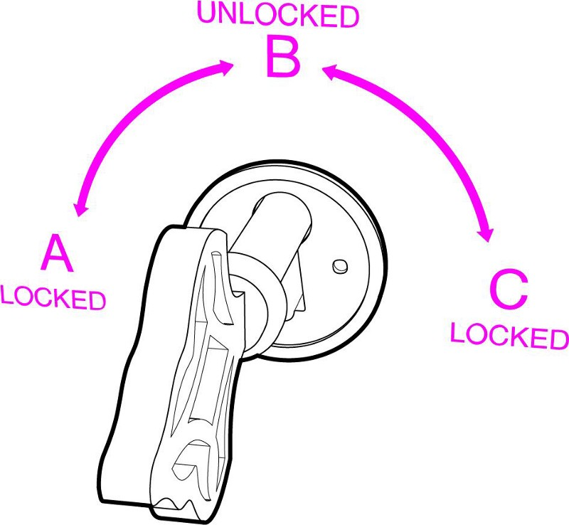

In cryptography, encryption is the process of encoding a message or information in such a way that only authorized parties can access it.
Encryption does not of itself prevent interference, but denies the intelligible content to a would-be interceptor. In an encryption scheme,
the intended information or message, referred to as plaintext, is encrypted using an encryption algorithm, generating ciphertext that can only be
read if decrypted. For technical reasons, an encryption scheme usually uses a pseudo-random encryption key generated by an algorithm.
It is in principle possible to decrypt the message without possessing the key, but, for a well-designed encryption scheme,
considerable computational resources and skills are required.
An authorized recipient can easily decrypt the message with the key provided by the originator to recipients but not to unauthorized users.
First of all, let’s see how “symmetric” cryptography works.
John has a box with a lock. As usual, the lock has a key that can lock and unlock the box. So, if John wants to protect something, he puts it in the box and locks it. Obviously, only he or someone else with a copy of his key can open the box.
That’s symmetric cryptography: you have one key, and you use it to encrypt (“lock”) and decrypt (“unlock”) your data.
Now let’s see how asymmetric, or “public-key” cryptography works.
Anna has a box too. It’s a box with a very special lock.
This lock has three states: A (locked), B (unlocked) and C (locked).

And it has two separate (yes, two) keys. The first one can only turn clockwise (from A to B to C) and the second one can only turn counterclockwise (from C to B to A).
Anna picks the first one of the keys and keeps it to herself. We will call this key, her “private” key -because only Anna has it.
We will call the second key, her “public” key: Anna makes a hundred copies of it, and she gives some to friends and family, she leaves a bunch on her desk at the office, she hangs a couple outside her door, etc. If someone asks her for a business card, she hands him a copy of the key too.
So. Anna has her private key that can turn from A to B to C. And everyone else has her public key that can turn from C to B to A.
We can do some very interesting things with these keys.
First of all, imagine you want to send Anna a very personal document. You put the document in the box and use a copy of her public key to lock it. Remember, Anna’s public key only turns counterclockwise, so you turn it to position A. Now the box is locked. The only key that can turn from A to B is Anna’s private key, the one she’s kept for herself.
That’s it! This is what we call public key encryption: Everyone who has Anna’s public key (and it’s easy to find a copy of it, she’s been giving them away, remember?), can put documents in her box, lock it, and know that the only person who can unlock it is Anna.
There is one more interesting use of this box.
Suppose Anna puts a document in it. And she uses her private key to lock the box, i.e. turn the key to position (C).
Why would she do this? After all, anyone with her public key, can unlock it! Wait.
Someone delivers me this box and he says it’s from Anna. I don’t believe him, but I pick Anna’s public key from the drawer where I keep all the public keys of my friends, and try it. I turn right, nothing. I turn left and the box opens! “Hmm”, I think. “This can only mean one thing: the box was locked using Anna’s private key, the one that only she has.”
So, I’m sure that Anna, and no one else, put the documents in the box. We call this, “digital signature”.
In the digital world things are much easier. [**]
“Keys” are just numbers -big, long numbers with many digits. You can keep your private key, which is a number, in a text file or in a special app. You can put your public key, which is also a very long number, in your email signature, your website, etc. And there is no need for special boxes, you just “lock” and “unlock” files (or data) using an app and your keys.
If anyone, even you, encrypt (“lock”) something with your public key, only you can decrypt it (“unlock”) with your secret, private key.
If you encrypt (“lock”) something with your private key, anyone can decrypt it (“unlock”), but this serves as a proof you encrypted it: it’s “digitally signed” by you.